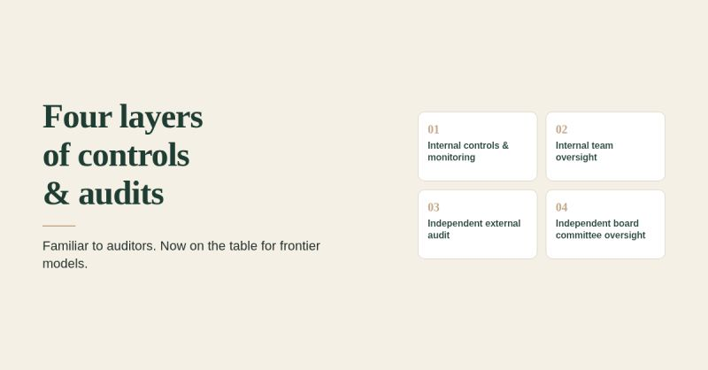

Four layers of controls & audits

Robust internal processes and controls, independent oversight, independent external audits, and internal audits are foundational to audit and assurance work, particularly for publicly traded companies and internal control over financial reporting. That same foundation has clear parallels for companies developing and deploying frontier models. Yesterday, leading AI companies signed a voluntary accord on super intelligence, a commitment around implementing four layers of controls and audits. Worth reading if you work in either world.
It’s a short document — and the themes will feel familiar to auditors.
Given the risks around superintelligence, clearer industry alignment — including shared commitments and best practices on frontier development — seems like a meaningful step and there may be more to come.
If you’re building with AI, bake that approach in early — so you scale with clearer oversight and better-managed risk.
I’m a CPA with 11+ years leading risk-based audit and transformation work across large global and national firms. I approach AI with rigorous testing, professional standards, and innovation. If you're adopting or deepening AI — like standing up an agent team — and want an internal controls-minded setup with clearer measures of value, message me. As a fractional AI lead, I can help review your current AI use, design and implement agent teams with guardrails, and define progress metrics — with human oversight and relevant risks in view. When useful, I can also provide other services. Happy to have a short fit conversation.